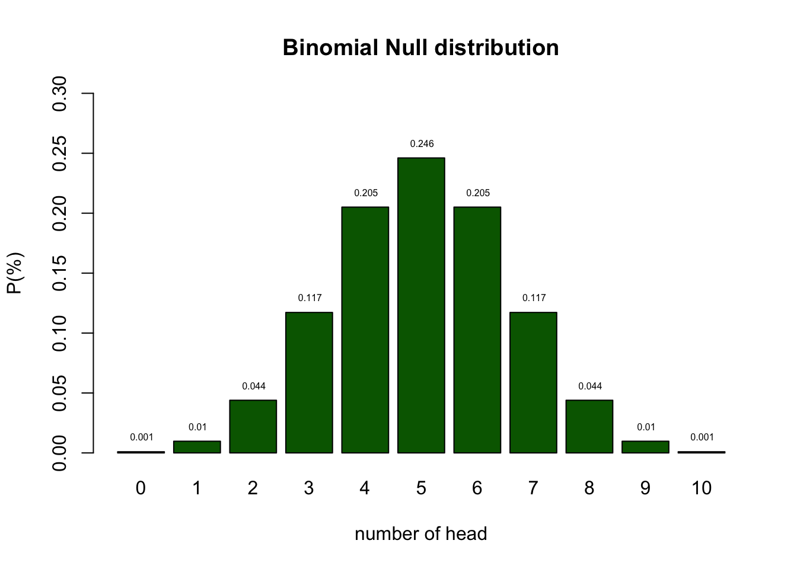

Statistical Reasoning
Null Hypothesis Testisn
Klinkenberg
03 sep 2020
Learning
Reasoning in statistics
Source: ARTIST
Statistical Literacy
- Knowledge (Basic understanding of concepts)
- Identify
- Describe
- Skils (Ability to work with statistical tools)
- Translate
- Interpret
- Read
- Compute
Statistical Reasoning
- Understanding
- Explain why
- Explain how
Statistical thinking
- Apply
- What methods to use in a specific situation
- Critique
- Comment and reflect on work of others
- Evaluate
- Assigning value to work
- Generalize
- What does variation mean in the large scheme of life
Empirical Cycle
By Adriaan de Groot
The components
- Observation
- Idea for hypothesis
- Induction
- General rule
- Hypothesis
- Deduction
- Expectation / Prediction
- Operationalization
- Testing
- Test hypothesis
- Compare data to prediction
- Evaluation
- Interpret results in terms of hypothesis
Explained by Annemarie Zandscholten
Experiment
Heads

bit.ly/2j54A2U
Emperical Cycle
- Observation Patiënt is showing post traumatic symptoms
- Induction Can we diagnose PTSS
- Deduction \(H_0\): P: fair coin → C: patiënt is balanced
- Deduction \(H_A\): P: Unfair coin → C: patiënt is unbalanced
- Deduction \(H_A\): P: data \(\neq\) EV → C: is unbalanced
- Testing Choose \(\alpha\) and Power
- Evaluation Make a decision
Distributions
What is the difference between
- Population distribution
- Sample distribution
- Samples distribution
# install.packages("curl")
library("curl")
url = "https://docs.google.com/spreadsheets/d/e/2PACX-1vSsDN_T8O8wuk3R-QuQR2PpUfK9IeM979FzMSNZi1krq_T8ICAxE5N10di8vwHfJRHXrr-zwXtKsTWz/pub?output=csv"
data <- read.csv(curl(url))Binomial distribution
\[ {n\choose k}p^k(1-p)^{n-k} \\ {n\choose k} = \frac{n!}{k!(n-k)!} \]
With values:
n = 10 # Sample size
k = 0:10 # Discrete probability space
p = .5 # Probability of headProbabilities

Testing
I landed 2 times head. Can we conclude PTSS?
- As you can see from the distribution of healthy coins, we cannot conclude that by definition.
- What we can do is indicate how rare 2 is in a healthy population.
Testing
- Based on the null distribution we can see that the expected value (EV is 5.)
- We can now define the \(H_0\) hypothesis: \(H_0 = 5\)
- What is the alternative hypothesis?
- The alternative hypothesis describes a situation where PTSS is pressent.
- We could say that the alternative hypothesis is not 5.
- \(H_A \ne 5\)
- We could also formulate our \(H_0\) and \(H_A\) more abstract:
- \(H_0:\) the patient is balenced
- \(H_A:\) the patient is unbalenced
- What criterium should we use to conclude that one would be unbalenced?
- In the social sciences this \(\alpha\) criteria is often 5%.
- I tossed 2 times head. That is more frequent than 5%.
- Therefore, we conclude that our patient is probably healthy but we can never be sure.
- My coin could still be part of the unbalenced population.
Null distribution

Alternative Distribution
But we have no clue of what this distribution could look like.
For now let’s assume the probability of landing heads for my coin is .25

\(H_0\) and \(H_A\) distribution